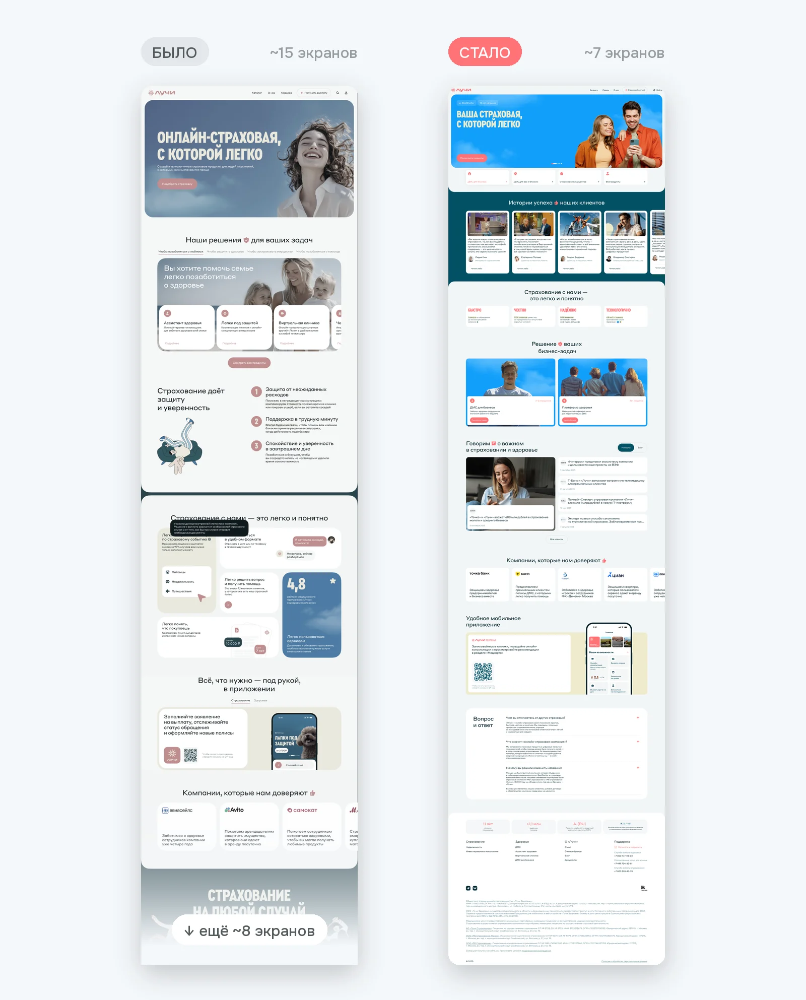
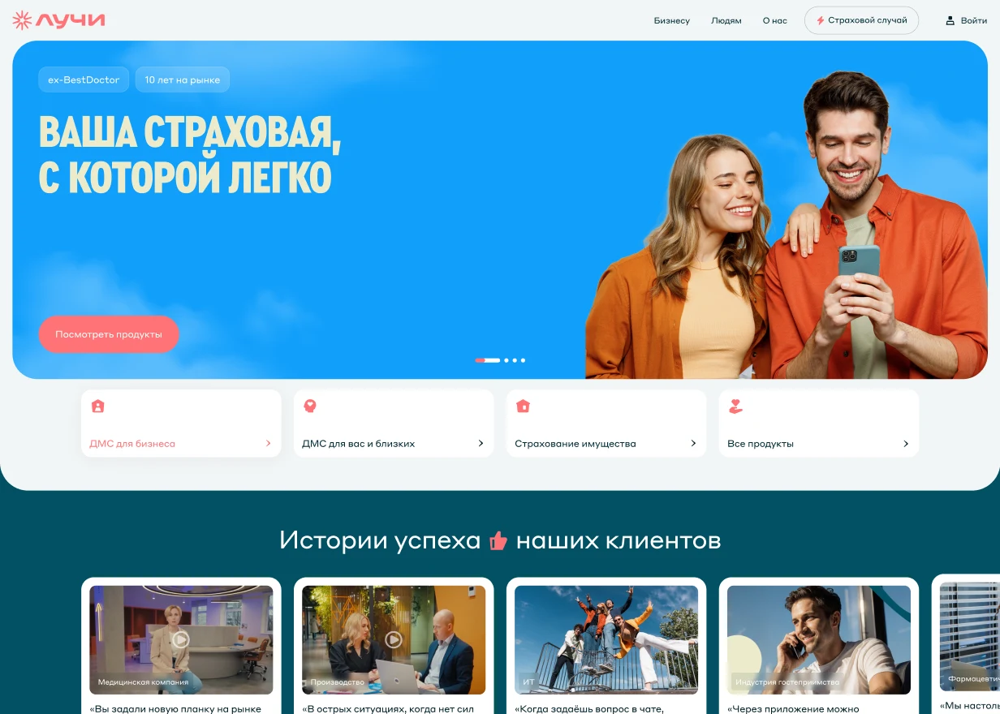
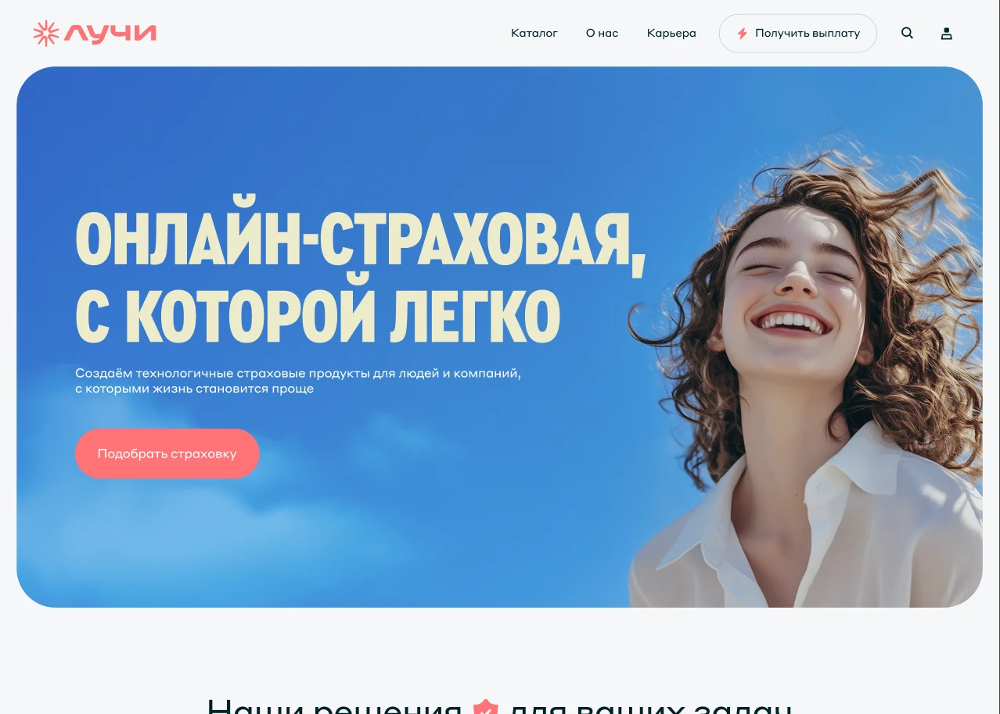
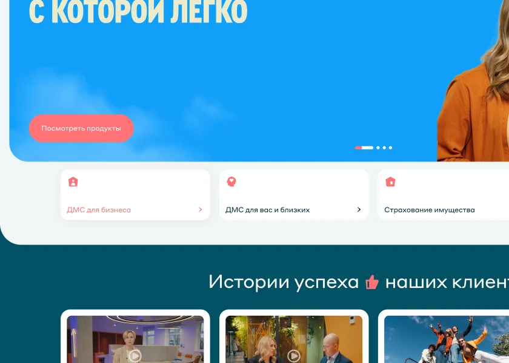
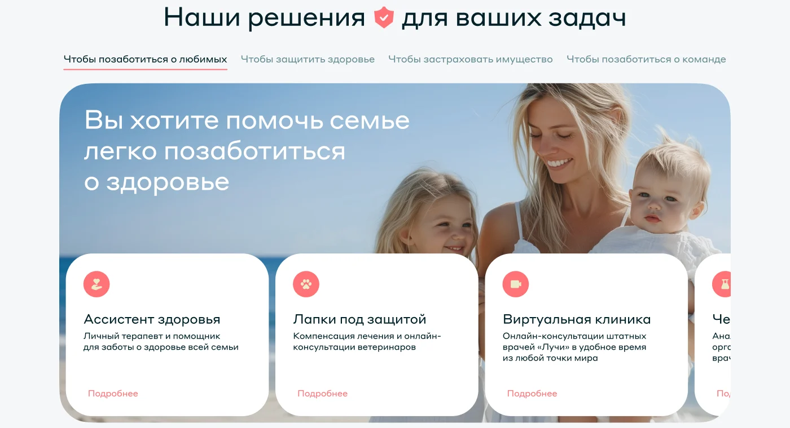
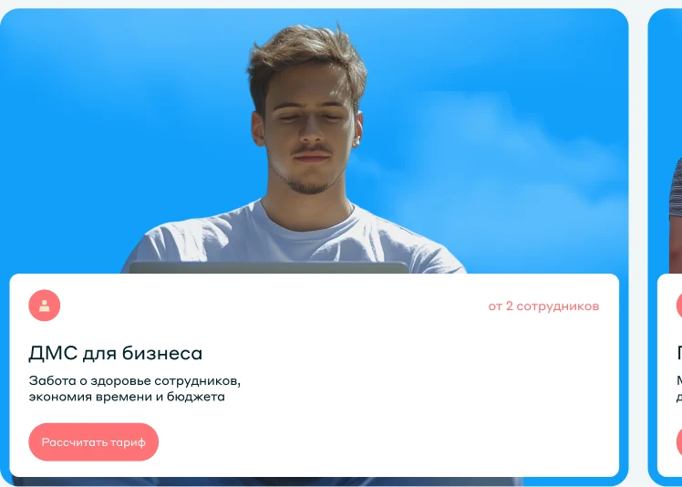
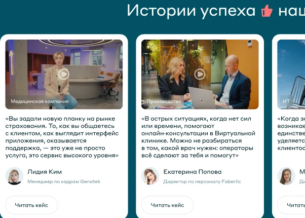
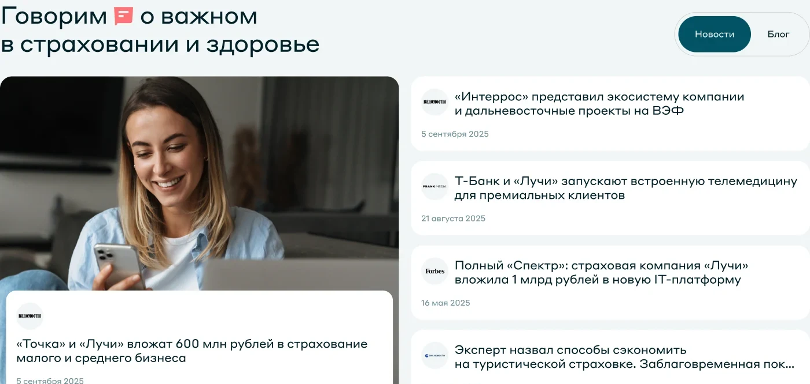
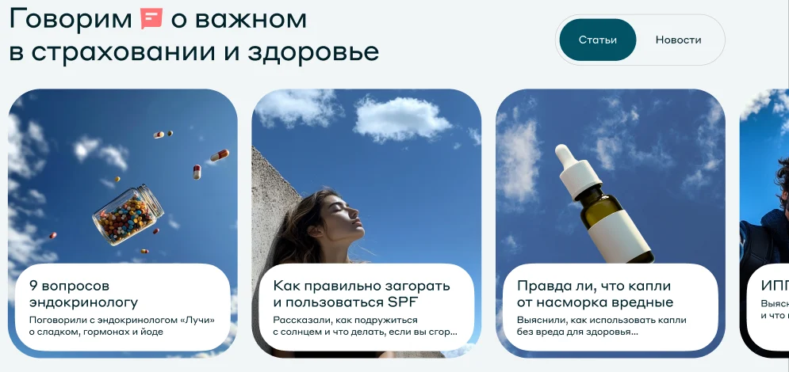

Пересобрала главную вокруг главного продукта — ДМС для бизнеса
Задача
Старая главная была витриной бренда: обложка на весь экран, продукты в табах, ДМС для бизнеса — в четвёртом. Самый продаваемый продукт было трудно найти.
Что сделала
- Сократила хиро-баннер
- Вынесла главные продукты под баннер
- Добавила отдельный блок для бизнеса
- Добавила отзывы компаний
- Заменила статьи новостями о компании

Что сделала: 5 шагов
Тяните ползунок на экране, чтобы сравнить было и стало
01Сократила хиро-баннер
ЗачемОгромная обложка занимала весь первый экран и ничего не давала пользователю.
- Баннер стал компактнее
- На первом экране сразу видны продукты и начало отзывов


02Вынесла главные продукты под баннер
ЗачемДМС для бизнеса — главный продукт, его должны найти сразу, без похода в каталог.
- Было: табы и карусель, бизнес — в 4‑м табе
- Стало: 4 карточки под баннером, ДМС для бизнеса первой
- До продукта — 1 клик


03Добавила отдельный блок для бизнеса
ЗачемHR, который пролистал ниже, снова видит свой продукт и понятный следующий шаг.
- Условие «от 2 сотрудников» сразу на карточке
- «Рассчитать тариф» вместо «Подробнее»

Новый блок04Добавила отзывы компаний
ЗачемHR должны видеть, что с нами работают известные компании и они довольны.
- Истории с именем, должностью и видео
- Стоят сразу после первого экрана

Новый блок05Заменила статьи новостями о компании
ЗачемПоказываем, что Лучи развиваются и активны, а не только говорят, что с ними работают.
- Партнёрства с Т‑Банком и «Точкой», публикации в Forbes
- Переключатель ведёт в блог


Ещё: цифры вместо общих обещаний (1 минута · 93% · 90% · 4,8) · один графический язык без иллюстраций · FAQ 5 → 3 вопроса · футер с рейтингом АКРА и 1,1 млн полисов